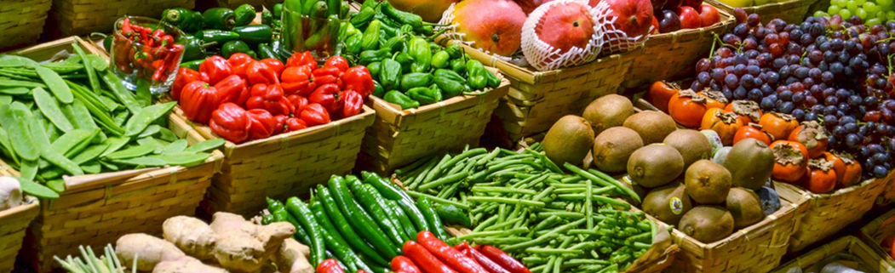

BEM VINDO AO SISTEMA INTERNO DA HORTINHA DO RAVI!
Aqui você pode comprar seus vegetais, legumes e frutas fresquinhos que nós entregamos em domicílio com horário marcado! Tudo pronto para consumo, devidamente descascado ou cortado. A hortinha do ravi nasceu da necessidade de termos uma alimentação saudável unida da praticidade e agilidade tão requisitada nos dias de hoje. A hortinha do ravi é pra você!